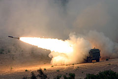
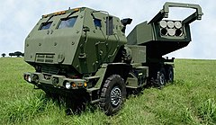
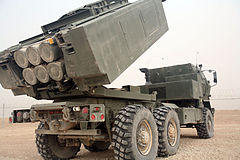

Зміст
Опис
Залежно від снарядів, виконує роль РСЗВ або фронтової тактичної ракетної установки). Виробляється одним із підрозділів Lockheed Martin. Була розроблена наприкінці 1990-х років на колісному шасі як система, що мала підвищену мобільність у порівнянні з гусеничною M270 MLRS, з якою має уніфіковану пускову установку й арсенал боєприпасів.
Вантажівка HIMARS має масу 16 тонн, з яких 5 ― корисного навантаження: несе шість снарядів для залпового вогню або одну ракету MGM-140 ATACMS. Транспортується літаком C-130.
На відміну від більшості радянських реактивних систем залпового вогню, які досі використовують некеровані боєприпаси, HIMARS, завдяки постійному розвитку сумісного озброєння, на цей час має в арсеналі у тому числі керовані високоточні реактивні снаряди, тактичні й балістичні ракети, відтак збільшивши відстань вогневого ураження до, станом на 2022 рік, максимальних аж 499 км[8][9].
HIMARS — це високомобільна реактивна система залпового вогню, призначена для ураження районів зосередження артилерійських систем, засобів ППО і вогневої підтримки, вантажного транспорту, бойових машин і бронетранспортерів, а також для надання вогневої підтримки своїм підрозділам і засобам підтримки[10].
Система призначена для стрільби керованими й некерованими ракетами. Максимальна дальність залежить від використовуваного озброєння й складає 499 км ракетами PrSM[11][12]. Підготовка до стрільби триває 1 хвилину завдяки тому, що стандартні реактивні снаряди постачаються в пускову установку одразу зарядженими у спеціальних пеналах, що містить 6 снарядів класу MLRS, 2 балістичні ракети PrSM[11][12] або 1 ракету ATACMS[13].
У 2018 році перевірили можливість передачі координат цілі з літака F-35B безпосередньо на пускову установку HIMARS. Таким чином має істотно скоротитись проміжок між виявленням цілі та її знищенням. У цій схемі літак F-35B з його потужними сенсорами виступає в ролі розвідника[14].
Характеристики
- Обслуга: 3 особи (водій, стрілець, командир)
- Маса: 10 866 кг (колісне шасі)
- Довжина: 7 м
- Ширина: 2,4 м
- Висота: 3,2 м
- Запас ходу машини: 480 км
- Максимальна швидкість по шосе: 85 км/год
- Основне озброєння: 6 снарядів 227 мм класу MLRS або 1 ракета 610 мм ATACMS або 2 ракети PrSM.
- Броня: захист проти легких набоїв і осколків[15]
Озброєння (MFOM)
Озброєння у системах М142 завантажується до т. зв. пеналу у різній кількості, що зумовлено його потужністю.
Загальною назвою такого озброєння, пропонованою виробником, є MFOM (MLRS Family of Munitions), що включає в
себе різноманітні класи озброєння від поточних, як то, станом на 2022 рік, керовані й некеровані реактивні
снаряди
або високоточні тактичні й балістичні ракети, і до будь-яких майбутніх.
MLRS (застаріле)
- Реактивні ракети M26 — застарілий некерований касетний боєприпас, заборонений до використання у низці краін, з відстанню ураження від 15 до 32 або (у подальших модифікаціях A1(2) ER (extended range) за рахунок зменшення бойовоїчастини) 45 км.
- AT2 SCATMIN — німецький різновид ракет M26 з бойовою частиною, що містить 28 протитанкових мін AT2 (варіант DM1399) з відстанню використання від 15 до 38 км.
MLRS
Реактивні снаряди М28 є різновидом некерованих реактивних снарядів M26 системи M270[18]. Кожний ракетний пенал містить 6 однакових ракет. Попри те, що їх було розроблено одночасно з M26, саме їх широко використовують і досі, й вони отримали подовження лінійки продуктів, як-от M30/31 тощо через відсутність заборони на унітарні (а не касетні) боєголовки у світі.
- Реактивні ракети M28. Різновид ракет M26 із трьома баластними контейнерами та трьома
контейнерами
димового
маркування замість корисного навантаження суббоєприпасів.
- RRPR (Reduced Range Practice Rocket) Тренувальна ракета зі зменшеною дальністю M28A1 із затупленим носом. Діапазон зменшено до 9 км.
- LCRRPR (Low Cost Reduced Range Practice Rocket) Низьковартісна тренувальна ракета зі зменшеною дальністю M28A2 із затупленим носом. Діапазон зменшено до 9 км.
GMLRS
Ракети керованої реактивної системи залпового вогню GMLRS мають розширений у порівнянні з MLRS радіус дії та, на відміну від MLRS, GPS навігацію до своєї інерціальної навігаційної системи. Ракети GMLRS були представлені в 2005 році. Ракети M30 і M31, за винятком їхніх боєголовок, ідентичні[19]. Станом на 1 грудня 2021 було виготовлено 50 тисяч ракет GMLRS, щорічне виробництво яких зараз перевищує 9 тисяч ракет. Кожний ракетний пенал містить 6 однакових ракет.
Актуальним станом на 2022 рік є виробництво виключно модифікацій A2.
- Ракети M30 з 404 суббоєприпасами DPICM (удосконалені звичайні боєприпаси подвійного
призначення)
M101.
Діапазон 15-84 км. З 2004 по 2009 рік було вироблено 3936, виробництво було припинено на користь M30A1.
Залишки ракет M30
булооновлено боєголовками M30A1 або M31A1.
- Ракети M30A1 з альтернативною боєголовкою (AW або Alternative Warhead), до являє собою осколковий снаряд з повітряним підривом на висоті близько 9 метрів для максимальної площі ефективного ураження. Діапазон 15-84 км. Ракета GMLRS, яка замість вражаючих елементів вибухової дії M30 має приблизно 182 000 вражаючих не вибухових вольфрамових елементів зонального ураження. Виробництво розпочато в 2015 році. Ця боєголовка є кращою не лише тому, що не використовує касетні засоби ураження, але вона також переважає звичайний розривний снаряд: «Вибуховий снаряд має дуже велике ураження, оскільки він продукує великий вибух та великі шматки шрапнелі, але цей снаряд складається з маленьких кульок і охоплює набагато більшу площу.».
- Ракети M30A2 з альтернативною боєголовкою (AW) (Guided Multiple Launch Rocket System). Діапазон 15-84 км. Покращений M30A1, має реактивний двигун стійкий до ураження вибухом або кулями (IMPS). Єдиний варіант M30, який виробляється з 2019 року.
- Ракети M31 з 90 кілограмовою цільною осколково-фугасною бойовою частиною. Діапазон: 15-84
км.
Надійшов у
виробництво в 2005 році. Боєголовка виробляється компанією General Dynamics і містить 23 кг (51 фунт)
фугасної
речовини PBX-109 у сталевому вибухово-осколковому футлярі.
- Ракети M31A1 з 90 кілограмовою цільною осколково-фугасною бойовою частиною. Діапазон 15-84 км. Покращена версія M31.
- Ракети M31A2(GMLRS Unitary High Explosive (HE) Missile Pods) з 90 кілограмовою цільною осколково-фугасною бойовою частиною. Діапазон: 15-84 км. Покращений варіант M31A1, має реактивний двигун стійкий до ураження вибухом або кулями (IMPS). Єдиний варіант M31, який виробляється з 2019 року.
- Ракети M32 SMArt — німецька розробка GMLRS на основі M30 (відтак радіус дії такої 15-84 км) для MARS II, що містить у бойовій частині 4 начебто (точаться спори щодо чи то касетна чи високоточна зброя) касетних SMArt 155 та нове польотне ПЗ, що призначені для знищення бронетехніки.
ER GMLRS
Ракети ER GMLRS (англ. Extended Range Guided Multiple Launch Rocket System) з розширеною у порівнянні з GMLRS дальністю до 150 км. У ракетах використовується дещо збільшений розмір ракетного двигуна, нова конструкція корпусу та хвостового оперення. Поставлятиметься з цільною/унітарною (Unitary) та альтернативною (Alternative) боєголовками (Warhead). Перший успішний випробувальний політ ER GMLRS відбувся в березні 2021 року[33]. Lockheed Martin планує включити ER у свою лінійку продукції в 2023 фінансовому році та планує виробляти нові ракети на своєму заводі в Камдені. Повна готовність до використання запланована на 2025 рік. У 2022 році Фінляндія стала першим іноземним замовником ER GMLRS[35]. Естонія також не змусила себе чекати щодо такого кроку.
- Ракети M403(Extended Range GMLRS (ER GMLRS) Alternative Warhead (AW) Missile Pods[37]) — керована ракета з осколковою бч, повітряним підривом й відстанню ураження у 150 км.
- Ракети XM404(Extended Range GMLRS (ER GMLRS) Unitary Pods[38]) — керована ракета з цільною бч й відстанню ураження у 150 км.
GLSDB
28 листопада 2022 року стало відомо про розгляд Пентагоном пропозиції Боїнга щодо реалізації можливості використання нового типу снарядів саме з HIMARS — т.з. GLSDB (від Ground Launched Small Diameter Bomb, дослівно — Бомба малого діаметра наземного запуску), або здатної маневрувати у межах аж до 360 градусів крилатої високоточної бомби з максимальною відстанню ураження у 150 км, що є симбіозом двигуна від M26 й бомби SDB I з точністю влучання у 1 метр[40] та попередньо позиціонувалась для використання виключно з M270.
ATACMS
ATACMS (від Army Tactical Missile System, дослівно — Армійська тактична ракетна система) — серія 610 мм ракети класу «земля-земля» (РСЗ) з дальністю стрільби до 300 км. Кожна ракетна капсула містить одну ракету ATACMS. Станом на 2022 рік на озброєнні американських військ залишаються лише M48, M57 і M57E1.
- Ракета M39 (ATACMS BLOCK I) з інерційним наведенням. Ракета несе 950 протипіхотних і
бронебійних
(APAM) бомб M74.
Діапазон: 25-165 км. З 1990 по 1997 рік було виготовлено 1650 M39, після чого виробництво було припинено
на
користь M39A1. Під час операції «Буря в пустелі» по іракських цілях було випущено 32 M39, а під час
операції
«Іракська
свобода» було випущено ще 379 M39[44][45]. Решта ракет M39 модернізуються до ракет M57E1[46][47]. M39
єдиний
варіант ATACMS, яким можуть стріляти всі варіанти M270 і M142.
- Ракета M39A1 (ATACMS BLOCK IA) з з GPS-наведенням. Ракета несе 300 бомб M74 APAM. Діапазон: 20-300 км. З 1997 по 2003 рік було виготовлено 610 M39A1. Під час операції «Іракська свобода» було випущено 74 M39A1[44][45]. Решта ракет M39A1 модернізуються до ракет M57E1. M39A1 і всі пізніше представлені ракети ATACMS можуть використовуватися тільки з M270A1 (або його варіантами) і M142.
- Ракета M48 (ATACMS Quick Reaction Unitary (QRU)) з GPS-наведенням. Ракета несе 227 кілограмову (500 фунтів) проникаючу осколково-фугасну боєголовку протикорабельної ракети Harpoon ВМС США WDU-18/B. Діапазон: 70-300 км. 176 M48 було виготовлено між 2001 і 2004 роками, виробництво було припинено на користь M57. Під час операції «Іракська свобода» по іракських цілях було випущено 16 M48; ще 42 M48 були випущені під час операції «Нескорена свобода»[44][45]. Решта ракет M48 залишаються в арсеналі армії США та Корпусу морської піхоти США.
-
Ракета M57 (ATACMS TACMS 2000) з GPS-наведенням (Army Tactical Missile System (ATACMS)
Missile
Pods) . Ракета
має таку ж боєголовку (WDU-18/B), що й M48. Діапазон: 70-300 км. З 2004 по 2013 рік було виготовлено 513
M57.
- Ракета M57E1 (ракета модифікації ATACMS (MOD)) з GPS-наведенням. M57E1 — це позначення модернізованих M39 і M39A1 із заміненим двигуном, оновленим програмним і апаратним забезпеченням навігації та наведення, а також боєголовкою WDU-18/B замість бомб M74 APAM. M57E1 ATACMS MOD також містить датчик наближення для підриву у повітрі. Виробництво почалося в 2017 році з початкового замовлення на 220 модернізованих M57E1[44][45]. Програму планується завершити в 2024 році з впровадженням ракети Precision Strike Missile (PrSM), яка замінить ракети ATACMS в арсеналі США.
PrSM
PrSM (від англ. Precision Strike Missile, дослівно — Високоточна ударна ракета) — це нова серія ракет з GPS-наведенням, яка почне замінювати ракети ATACMS у 2024 році. PrSM має нову боєголовку з зональним ефектом ураження і має радіус дії 60-499 км. Ракети PrSM можуть запускатися з M270A2 і M142, причому кожен ракетний пенал містить 2 ракети. Станом на 2022 рік PrSM перебуває на початковому етапі виробництва з низькими темпами, протягом року американським військовим постачається 110 ракет. PrSM буде введено в експлуатацію в 2023 році.
Розробка
M142 HIMARS розроблялася як набагато легша версія M270, що дало змогу замінити гусеничний хід колісним без суттєвого зниження прохідності, за рахунок зменшення боєкомплекту (M142, на відміну від M270, має одну пускову установку, а не дві). Її вікна виготовлені із великих аркушів сапфіру з покриттям шарами скла та полікарбонату, що є вдвічі прозорішим, але не менш міцним, за армоване скло, що було використано у M270.
M142 тестувалася як стандартна система для ведення вогню протиповітряними ракетами SLAMRAAM, що є модифікацією AIM-120 AMRAAM для наземного пуску.
У жовтні 2017 року морська піхота США вперше випустила ракету з M142 по наземній цілі з палуби десантного транспортного доку USS Anchorage, продемонструвавши здатність системи діяти на кораблях і вести точний вогонь з відстані протистояння проти берегової оборони. Програмне забезпечення націлювання транспортного засобу було перероблено, щоб він міг краще стріляти на платформі, що постійно рухається та маневрує.
Застосування
Афганістан
У звіті «Нью-Йорк таймс» від 21 жовтня 2010 року йдеться про те, що M142 сприяла наступу НАТО на Кандагар в Афганістані. Удари були спрямовані на схованки командирів Талібану і змусили багатьох із них втекти до Пакистану. 24 травня 2018 року в Муса-Калі внаслідок удару M142 загинули 50 бійців та лідерів Талібану.
Близький Схід
У листопаді 2015 року армія США повідомила, що розгорнула M142 в Іраку, випустивши щонайменше 400 снарядів по Ісламській Державі з початку літа. M142 були спрямовані на авіабази Аль-Асад і Аль-Такадум у провінції Аль-Анбар.
4 березня 2016 року американська M142 вперше випустила ракети по Сирії для підтримки сирійських повстанців, які боролися з Ісламською Державою. Пускові установки були розташовані в сусідній Йорданії.
На початку вересня 2016 року міжнародні ЗМІ та Державний департамент США повідомили, що нещодавно розгорнута M142 уразила цілі Ісламської Держави (ІДІЛ) у Сирії поблизу кордону з Туреччиною. У жовтні 2016 року M142 були розміщені на західному аеродромі Кайяра, приблизно за 65 км на південь від Мосула, беручи участь у битві за Мосул. 14 червня 2017 року M142 розгорнули в Аль-Танф[en] у Сирії для підтримки США повстанців у цьому районі. У вересні 2018 року сили підтримки США координували боротьбу із Сирійськими демократичними силами, щоб перемогти ІДІЛ на сході Сирії під час кампанії в Дайр-ез-Заурі, завдаючи ударів по позиціях Ісламської Держави ракетами GMLRS з M142. Системи M142 також були розташовані на нафтових родовищах Омар, приблизно за 25 км на північ від цілей, контрольованих ІДІЛ, для підтримки Сирійських демократичних сил.
Україна
Під час російського широкого вторгнення в Україну 2022 року Київ неодноразово закликав Вашингтон надати HIMARS і гусеничну ракетну систему M270. США погодилися надати Україні M142 HIMARS, але за умови використання лише снарядів малої дальності, які могли б уражати цілі тільки в межах України.
23 червня 2022 року міністр оборони України Олексій Резніков повідомив, що до України прибули перші системи HIMARS. Наступного дня волонтер Павло Нарожний поширив відео застосування установок HIMARS в Україні. На поширеному відео зафіксований здійснений вночі повний залп із двох установок по шість снарядів у кожній. 25 червня 2022 року Міністерство оборони України опублікувало офіційні кадри використання американських систем залпового вогню HIMARS.
28 червня 2022 року близько 10-ї години ранку в окупованому Перевальську зафіксовано вибухи на базі окупаційних військ РФ. При тому, дим здіймався не над складом із боєприпасами, а в місці, де перебувають самі окупанти. На той час місто перебувало за близько 60 км від лінії фронту[68]. Російські бойовики стверджували, що базу було уражено коригованим реактивним снарядом з установки HIMARS. На поширених ними фото було видно уламки від ракети M31A1 GMLRS з унітарною осколково-фугасною бойовою частиною, що використовується в установках HIMARS.
Застосування HIMARS суттєво ускладнило боєздатність російської армії. З 8 по 12 липня ЗСУ знищили ними численні ворожі склади боєприпасів, що зумовило різке зменшення ракетних ударів із окупованих територій. Російські джерела стверджували, що HIMARS знищили більшу частину керівництва російської 106-ї повітрянодесантної та 20-ї мобілізованої стрілецької дивізій. Російські системи протиповітряної оборони С-400 виявилися безпорадними проти ударів HIMARS.
Українські екіпажі HIMARS працюють переважно вночі, щоб мінімізувати можливість бути виявленими російськими безпілотниками. Якщо стріляють одночасно декілька машин — то з різних позицій. Введення координат цілей та пуск займає менше хвилини. Через кілька хвилин машини на великій швидкості залишають позиції. Українські військові високо оцінили точність коригованих боєприпасів — завдяки цьому з'явилася можливість завдавати удари по російських об'єктах без остраху спричинити небажані жертви, висока маневреність установки — на шосе цілком можливо рухатись зі швидкістю до 100 км/год, тихіший постріл у порівнянні з радянськими аналогами.
Головнокомандувач ЗСУ Валерій Залужний 18 липня 2022 року зазначив, що значною мірою саме завдяки HIMARS лінію фронту вдалося стабілізувати.
Оператори
- Йорданія — 12 одиниць на 2021 рік;
- ОАЕ — 32 одиниці на 2021 рік;
- Румунія — 54 одиниці на 2022 рік;
- Сінгапур — 18 одиниць на 2021 рік;
- США — 415 одиниць на 2021 рік;
- Україна — 20 одиниць + 18 готуються до поставки.
Естонія
У липні 2022 року Державний департамент США погодив ймовірний продаж Естонії систем HIMARS та ракет до них у рамках програми Foreign Military Sales.
Сума ймовірного контракту оцінюється у 500 млн доларів. За ці гроші Естонія має отримати шість пускових установок M142 HIMARS[80], боєприпаси, допоміжне обладнання, запасні частини та технічну підтримку. Також імовірно до контракту увійде 36 ракет M30А2, 36 ракет M31A2, 36 ракет XM403 і також 36 XM404, і, зрештою, 18 балістичних ракет ATACMS.
Латвія
23 липня 2022 року державний секретар Міністерства оборони Латвії Яніс Гарісонс повідомив про подачу запиту до уряду Сполучених Штатів на закупівлю мобільних ракетних систем HIMARS. У Латвії сподіваються, що HIMARS зможе надійти в розпорядження збройних сил країни до 2025 року. Також він зазначив, що придбання M142 є спільним рішенням та проектом усіх Балтійських країн.
Польща
Згідно з польською оборонною програмою «Homar» передбачалось придбати 160 пускових установок. Але в 2018
році
скерували запит на придбання лише 20 пускових з 270 високоточними ракетами GMLRS та 30 балістичними ракетами
ATACMS, а також додатковими командними, ремонтними, транспортними й заряджальними машинами. Загальна сума
цієї угоди становила близько 655 млн доларів США.
Наприкінці травня 2022 року міністр оборони Польщі Маріуш Блащак оголосив про намір розширити замовлення до
500 пускових установок, чого мало б вистачити для формування понад 80 батарей.
При цьому мала відбутися значна локалізація виробництва пускових установок та ракет до них у Польщі.
Румунія
Перші 18 РСЗВ HIMARS Румунія замовила в серпні 2018 року. Загалом планується отримати 54 системи з
керованими ракетами GMLRS та ATACMS. Це дасть змогу повністю переозброїти 8-му артилерійську бригаду, яка
має на озброєні 54 РСЗВ LAROM.
У березні 2021 міноборони Румунії повідомило, що загалом отримає 3 комплекти по 18 пускових установок кожен,
включно з боєприпасами, обслуговуванням та навчанням персоналу.
Перша партія РСЗВ HIMARS M142 надійшла наприкінці лютого 2021 року через чорноморський порт Констанца.
Озброєння отримав 81-й оперативно-тактичний ракетний батальйон «Майор Георге Чонцу» (81 Rachete Operativ
Tactice «Maior Gheorghe Şonţu») у місті Фокшани.
Сінгапур
Наприкінці 2009 році армія Сінгапуру отримала першу вогнепальну установку M142 з 24-х замовлених і досягнула її повної працездатності. Замовлена партія вирізняється тим, що озброєна некерованими ракетами M-26. 5 вересня 2011 року 23-й батальйон Сінгапурської артилерії ввів в експлуатацію батарею M142, що стало першою в своєму роді, цілком керованою за GPS.
Україна
У квітні 2022 року Президент України Володимир Зеленський у зверненні до союзників перелічив необхідну для перемоги над російськими загарбниками зброю. Серед всього іншого було названо й універсальні пускові установки M142 HIMARS.
31 травня 2022 року президент США Джозеф Байден підтвердив, що Сполучені Штати нададуть Україні досконаліші ракетні системи та боєприпаси, щоб українські військові могли «точніше уражати ключові цілі на полі бою». 1 червня 2022 року він офіційно заявив, що новий пакет військової допомоги для України буде включати HIMARS. 2 червня заступник очільника Пентагону США Колін Каль уточнив, що система буде оснащена снарядами GMLRS, а не балістичними ATACMS. Згодом стало відомо, що в переданих Україні системах усунута можливість вести вогонь ракетами ATACMS.
23 червня 2022 року міністр оборони України Олексій Резніков повідомив, що до України прибули перші системи HIMARS від США. За джерелами «Вашингтон пост», боєприпаси, які отримує Україна для РСЗВ HIMARS, матимуть дальність ураження до 70 кілометрів. Того ж дня Пентагон повідомив про склад наступного пакета допомоги Україні, до якого увійшли, серед іншого, чотири установки HIMARS.
7 липня 2022 року секретар РНБО Олексій Данілов повідомив, що партнерами передано 9 установок РСЗВ типу HIMARS, які вже діють на передовій.
9 липня 2022 року США оголосили про новий пакет військової допомоги в який увійдуть ще 4 установки HIMARS. 20 липня Міністр оборони США Ллойд Остін під час зустрічі «Рамштайн-4» повідомив, що Україна вже має 12 установок HIMARS.
22 липня 2022 року президент США Джозеф Байден підписав новий пакет військової допомоги Україні на суму 270 мільйонів доларів, який включає в себе 4 HIMARS. 1 серпня 2022 року міністр оборони України Олексій Резніков повідомив про прибуття до України 4 установок HIMARS, сумарно це становило 16 установок.
28 вересня 2022 року США оголосили замовлення промисловості 18 додаткових установок HIMARS та боєприпасів до них у межах пакету допомоги Україні на суму 1,1 млрд дол. США.
4 жовтня 2022 року Міністерство оборони США оголосило наступну передачу зброї та військового спорядження Україні на суму 625 млн дол. США, в тому числі 4 установок HIMARS.
Цікавинки
17 липня 2022 року командування ЗС РФ відрапортовало про знищення у тому числі «транспортно-заряджувальної машини» для HIMARS, якої насправді не існує.
30 серпня 2022 року The Washington Post видали статтю, в якій розповіли про використання ЗСУ дерев'яних макетів HIMARS для виманювання російських крилатих ракет. Таким чином, за повідомленнями, і з'являються постійні заяви росіян про знищення HIMARS: аеророзвідка наводить ракети на макети та звітує про враження справжніх установок.
Галерея
Запуск снарядів
Завантаження боєзапасу у M142 HIMARS
Запуск снарядів
